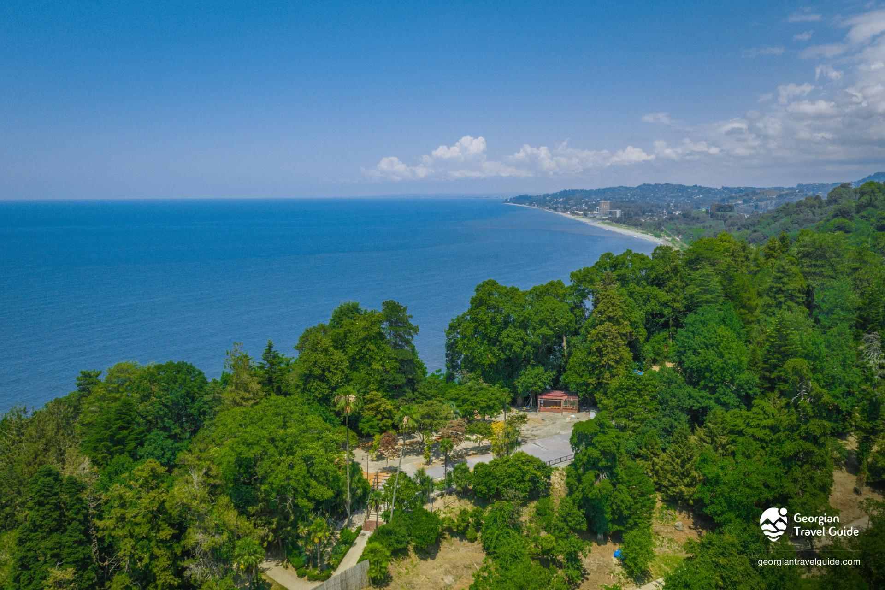
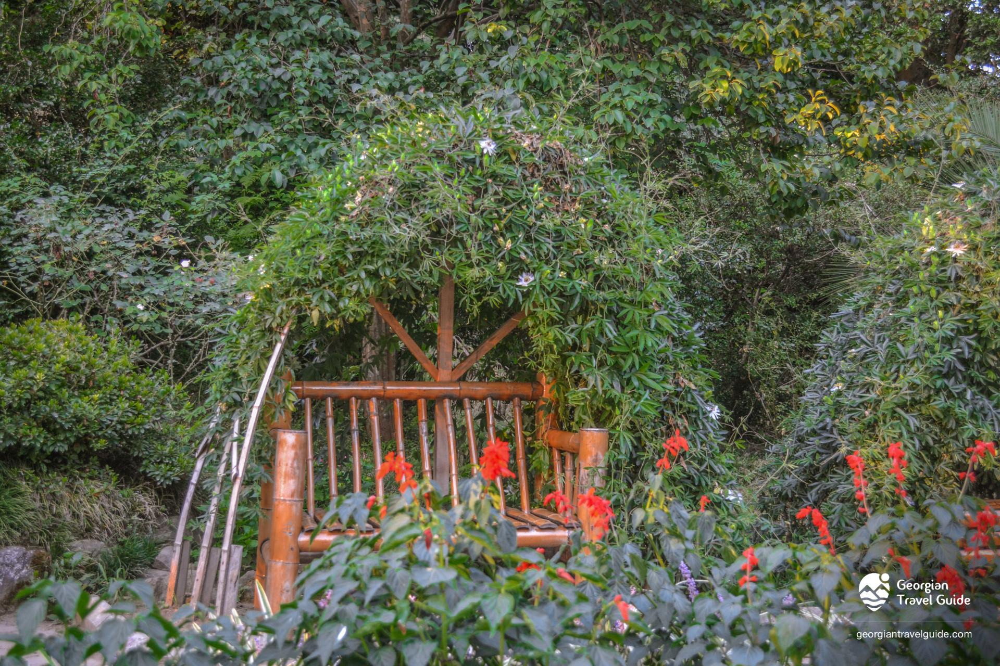
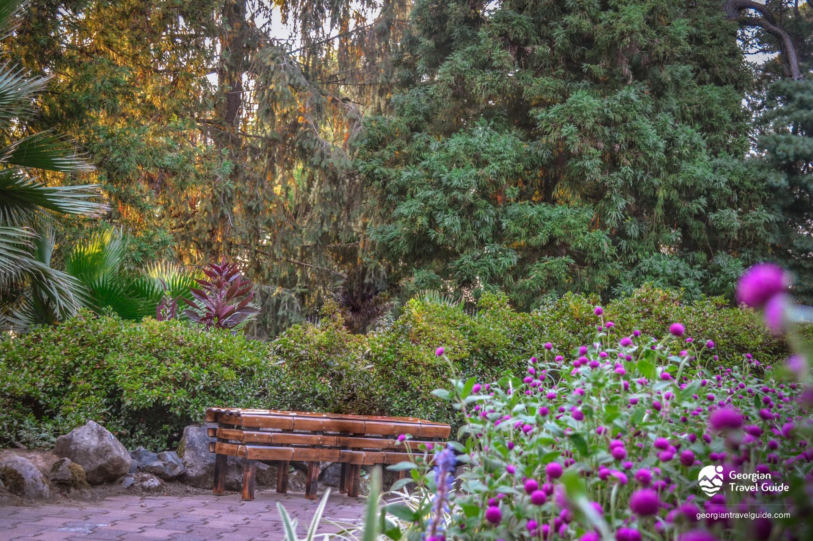
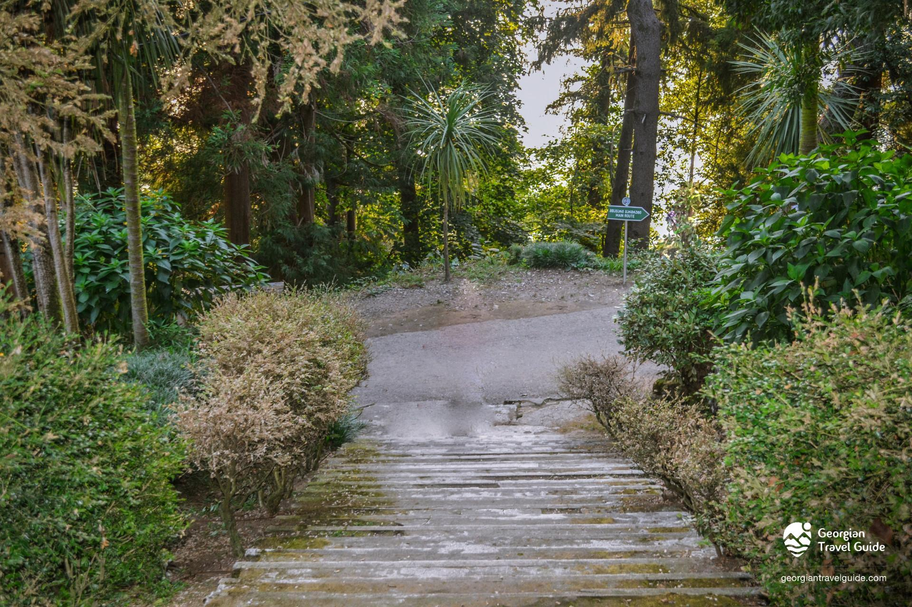
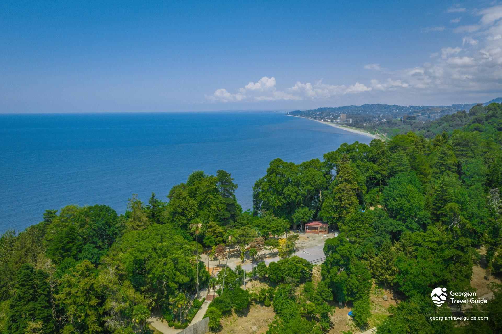
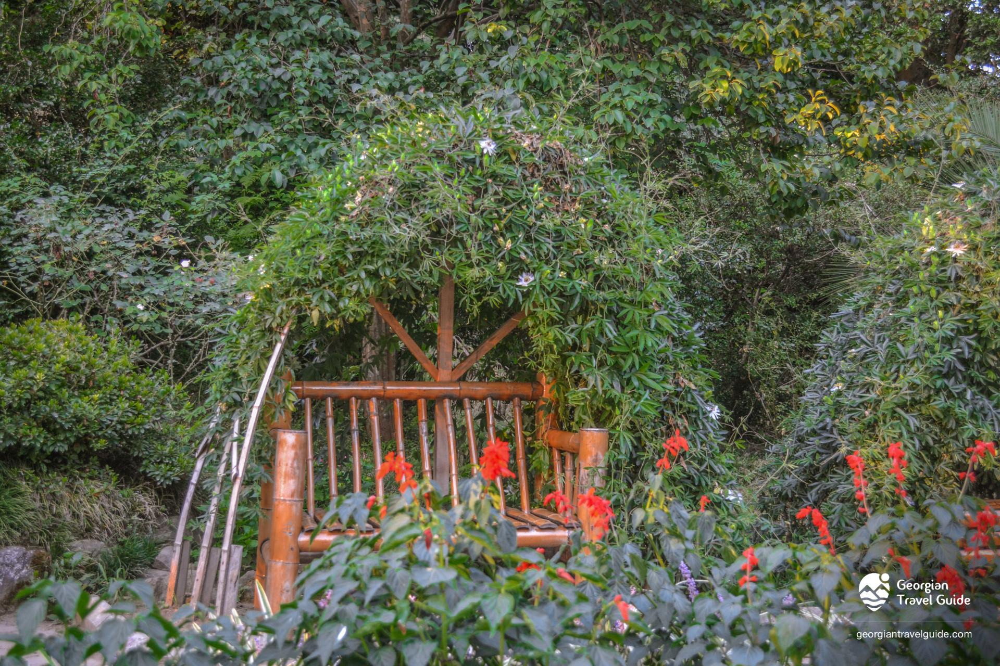
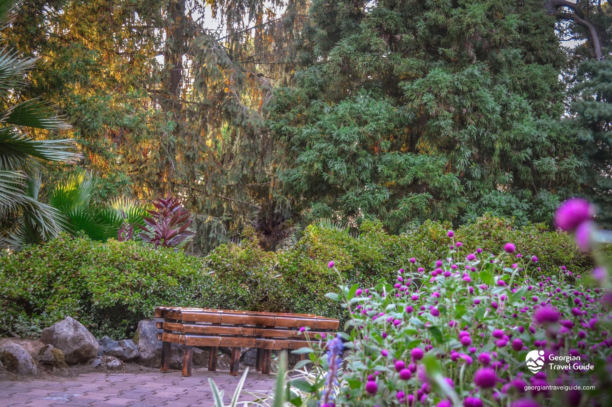
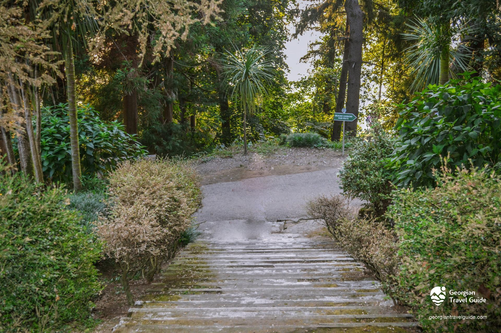

Batumi Botanical Garden
About Batumi Botanical Garden
Best time to visit : ALL SEASON
Batumi Botanical Garden, located 9 km from Batumi, spans 111 hectares along the coastline. Established in 1912, it features diverse floristic landscapes, including the Colchis Forest Reserve. Unique for hosting plants from various climates, it’s a paradise for nature lovers.
Dendroflora
The terrain of the Batumi Botanical Garden is mountainous the soil is reddish, brown and alluvial.
The garden has three dendro-parks, Colchis forest reserve and nine floristic-geographical sections:
humid subtropics of the Caucasus, Australia, New Zealand, the Himalayas, East Asia, North America, South America,
Mexico and the Mediterranean.
The plant collection includes more than 5,000 species, varieties, shapes and types.
The garden is full of unique plants: Podocarpus Totara, Southern Cordillera, Nepalese evergreen,
evergreen oaks, over 80 varieties of Japanese camellia, 20 species of maple palms, 15 species of magnolia.
You will also find a rich collection of azaleas, soap tree, many industrial varieties of bamboo, mammoth tree,
evergreen sequoia, fast-growing deciduous oaks, Mexican pine, many species of cactus, South American cassava, etc.
The ancient Colchian forest is well preserved here.
History
From the 1880s, efforts to introduce exotic plants to Batumi began, led by figures like Michael D'Alfonso and Pavel Tatarinov, who founded the "Acclimatization Garden" in 1892, now "Upper Park."
Batumi Botanical Garden was established by Professor Andrei Krasnov and opened on November 3, 1912, later developed by agronomist Iason Gordezian.
Today, it is a major research center, collaborating with over 140 institutions and housing a library, herbarium, and seed foundation.
In 2012, its centennial was celebrated with various events and a scientific conference.
PRICING
The standard price for a ticket to visit the Botanical Garden is 15 GEL (About 5.41 USD).
- The tariff system offers a discount of up to 25% on the standard fee for organized tourist groups, inbound travel agencies, companies, and government organizations based on mutual agreement.
- Batumi Card holders are also eligible for a 25% discount on the standard fee (15 GEL).
- On certain days throughout the calendar year, visitors of any category (both Georgian and foreign citizens) can access the garden for free. These days include:
- January 1-2 (New Year celebrations)
- May 26 (Georgian Independence Day)
- June 1 (International Children's Day)
- One day in March – Camellia Exhibition
- One day in April – Bamboo Exhibition
- One day in May – Rose Exhibition
- One day in November – Fruit and Citrus Exhibition
- One day in December – Cone Exhibition
- Batumioba (Batumi City Festival, according to the annual calendar)
Under the new regulations, free access to the Botanical Garden will be granted to:
- War veterans and Georgian Armed Forces veterans
- Persons with disabilities
- Orphans and children deprived of parental care
- Students
- Children under 10
- Families with a social rating score not exceeding 100,000 (upon presentation of relevant documents)
Due to the specifics of the Botanical Garden, the following groups also qualify for free entry:
- Institutions with a cooperation memorandum with the garden
- Scientists and researchers
- Student-lecturer groups conducting internships
- Participants in various garden projects and educational programs
- Official guests and delegations
Subscription Fees
- One-month pass (individual): 30 GEL(10.81USD)
- One-month pass (1+1 person): 50 GEL(18.02USD)
- One-month pass (1+2 people): 60 GEL(21.63USD)
Map
QUESTIONS
1 Review
+ ADD A REVIEW

Everything is beautiful here. Nature, plants. In terms of flora, we are getting to know plant species from different countries, except for Georgian ones. If I get the chance, I will definitely see them.